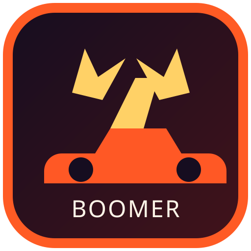
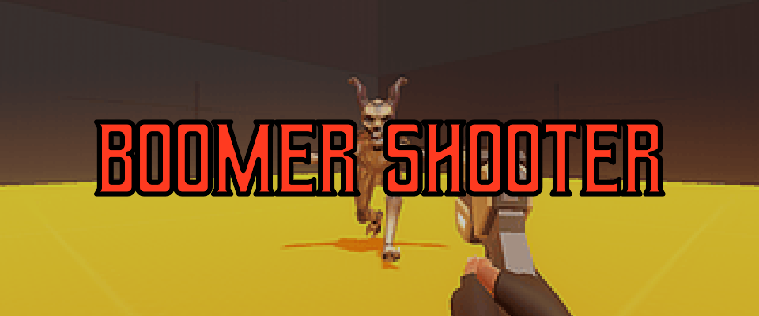
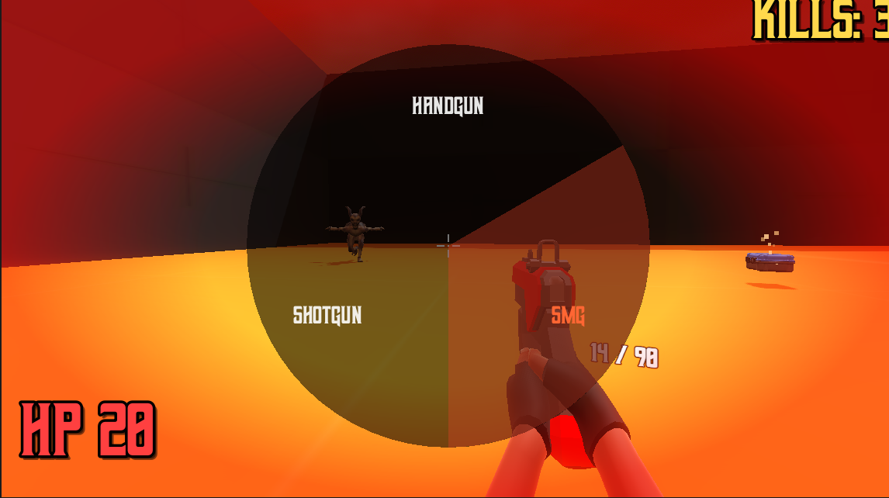
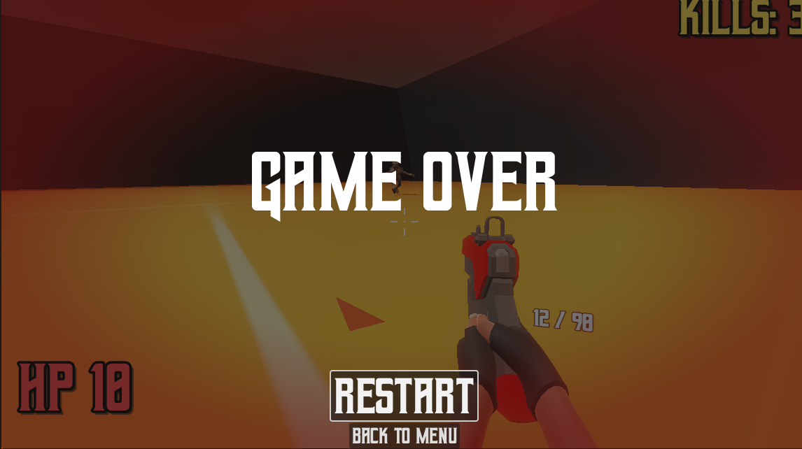
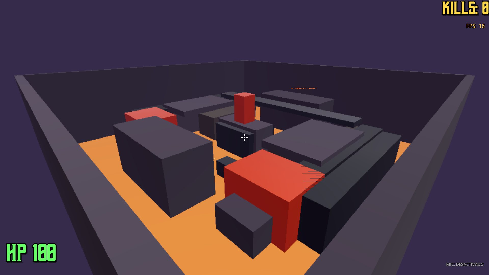
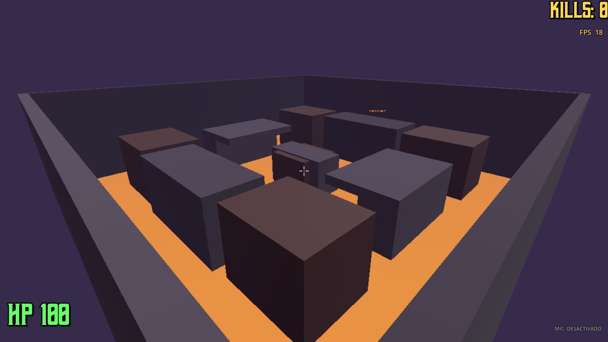
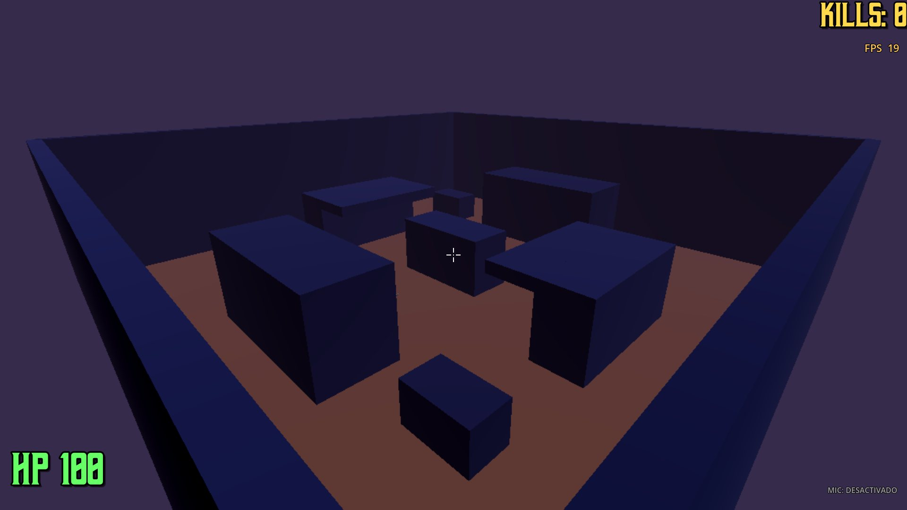

BLÁSTER
Precisión inmediata para controlar rutas.

BOOMERSHOOTERREQUISITOS
Corre en equipos modestos: el juego detecta el hardware y elige el perfil de rendimiento solo.
| COMPONENTE | MINIMO | RECOMENDADO |
|---|---|---|
| Sistema operativo | Windows 10 64-bit Linux 64-bit | Windows 11 64-bit |
| Procesador | 2 nucleos a 2.4 GHz Core i3 / Ryzen 3 | 4 nucleos a 3.0 GHz Core i5 / Ryzen 5 |
| Memoria RAM | 4 GB | 8 GB |
| Grafica | Integrada con Vulkan 1.0 HD 4000 / Vega 3 | Dedicada de 2 GB GTX 1050 / RX 560 |
| Almacenamiento | 1 GB libres | 2 GB en SSD |
| DirectX | 11 | 12 |
| Red | 3 Mbps online y voz | 10 Mbps |
| Perifericos | Teclado y raton | Mando XInput + auriculares |
| Rendimiento | Perfil Bajo · 60 FPS escala 3D 0.6 | Perfil Alto · 144 FPS |
Sin instalador: descargas un unico .exe y lo ejecutas.
UN FPS DE ALTA MOVILIDAD
Un FPS arcade rápido y brutal donde cada ruta es una decisión. Corre, deslízate, cambia de arma y domina la arena.
DESARROLLO ACTIVO · COOPERATIVO EN CAMINO

BOOMERMEDIOS


EL JUEGO
Diseñado para que moverte importe: rutas elevadas, túneles, cuellos de botella, escondites y pickups expuestos. Juega Arena offline o forma escuadrón desde Online.
EL ARSENAL
Cuatro herramientas. Ninguna recarga segura.
Precisión inmediata para controlar rutas.
Poder a corta distancia para cerrar un choke point.
Abre espacio cuando la presión sube.
Visibilidad y precisión desde una posición arriesgada.
MUNDOS
Tres arenas jugables hoy. Las capturas son del build 1.1.0.

Patio central expuesto con pasarela de dos accesos. Las compactadoras castigan a quien se queda quieto y los tuneles sirven para rotar sin regalar la espalda.

Aldea rural bajo lluvia constante. Callejones estrechos cortan la linea de tiro: obliga a pelear de cerca y a usar el cohete para abrir paso.

Base exterior en baja gravedad. Sales mas alto y caes mas lento, asi que el escenario se juega en vertical mientras las oleadas no dan tregua.
CONTROLES
WASD MOVER SHIFT CORRER C AGACHAR / DESLIZAR
LMB DISPARAR RMB APUNTAR R RECARGAR
LS MOVER RS MIRAR RT DISPARAR
LT APUNTAR A / ✕ SALTAR B / ○ DESLIZAR
BESTIARIO
Tres criaturas ya rondan las arenas. No sabemos de dónde vienen. Sí sabemos que no se detienen.
Rápido y en manada. Su caparazón repica antes de que lo veas. Si oyes el chasquido, ya es tarde para correr en línea recta.
Aparece desde la oleada 1 · ataca en grupoAguanta más de lo que debería y golpea fuerte. Los que sobreviven a tres oleadas cambian: vuelve más duro.
Variante élite cada tres oleadasFrágil, pero casi imposible de seguir con la mirada. Se lanza contra quien baja la guardia o recarga a campo abierto.
Prioriza al jugador más aisladoMODOS
Cuatro formas de resistir. Todas se juegan en equipo y todas acaban igual: alguien cae.
Defiende la arena oleada tras oleada. Si un compañero cae, tienes unos segundos para levantarlo.
Cooperativo · revivir activadoMás enemigos, más vida, una sola oportunidad. Aquí nadie te levanta.
Sin revivir · máxima presiónMuchos enemigos débiles a la vez. Gana quien mantiene la calma y la munición hasta la oleada 15.
15 oleadas · enjambresPocos enemigos, enormes. Cada oleada es un duelo que el equipo debe ganar junto.
10 oleadas · combates de jefePERSONAJE
El mismo personaje que ves dentro del juego, con las 8 skins de la tienda. Arrastra para girarlo.
LA CALLE
En cualquier sala y en cualquier modo hay gente por la calle. Distinguirlos es la diferencia entre hacer un amigo y comerte un cargador.
Van en grupo y con nombre propio: Los Oxido, Calavera Negra, Los Cables Sueltos, Sindicato Neon, La Chatarra, Los Tres Tornillos. Cuando se acercan salta un aviso en pantalla: SE ACERCAN LOS PANDILLEROS.
Se ven en rojo y con el nombre de la banda delante.
Uno solo, sin banda, con su propia cuenta. Aparece en naranja y el aviso te dice su nombre. No espera refuerzos y no negocia.
Tato el Reciclador, Dona Pila, Chente el Manitas, Nena Cable. Se ven en verde y con la etiqueta BUENA GENTE. Si te acercas te hablan y, con la F, se hacen tus amigos: te siguen por el mapa y quedan apuntados en tu marcador.
ACTUALIZACIONES
El juego se actualiza solo con un parche de contenido de unos 39 MB. Nunca vuelve a bajar el ejecutable completo: descarga el parche, comprueba el hash y se reinicia. Si algo falla, el boton de abajo siempre trae el ejecutable entero en un solo archivo.
PREGUNTAS
Respuestas rápidas antes de descargar.
Sí. El juego se descarga sin coste y sin compras dentro del juego.
No. Es un único archivo BoomerShooter.exe: lo descargas y lo abres.
Sí. Funciona con mandos Xbox, PlayStation y genéricos, y puedes reasignar todas las teclas desde Ajustes.
Las salas cooperativas admiten hasta 20 jugadores. Si una se llena, entras en otra.
El juego avisa cuando hay una versión nueva y las partidas online exigen tener la versión actual.
El juego detecta tu equipo y elige un perfil de rendimiento. Puedes ajustar la escala de render y el límite de FPS.
PRÓXIMAMENTE
Esto es lo que estamos preparando. Las fechas llegarán cuando estén listas, no antes.
Nuevas arenas con rutas, escondites y verticalidad, además de un vecindario bajo tormenta.
Nuevas amenazas para las oleadas avanzadas. De ellas, por ahora, mejor no hablar.
Oirás a tu equipo según la distancia. Está en desarrollo y no se activará hasta que funcione bien.
Dos jugadores en el mismo equipo, con teclado y mando o con dos mandos.
Solo llegarán cuando existan versiones reales y probadas.
LISTO PARA JUGAR
Elige tu plataforma. El juego avisará cuando exista una actualización.
LA COMUNIDAD
DEJA TU
HUELLA.
Crea tu cuenta y comenta el juego. Tu opinion moldea el juego.
OLEADAS
Defiende la arena oleada tras oleada. Si un compañero cae, tienes unos segundos para levantarlo.
Cooperativo · se puede revivirSUPERVIVENCIA
Más enemigos, más vida, una sola oportunidad. Aquí nadie te levanta.
Sin revivir · máxima presiónHORDA
Muchos enemigos débiles a la vez. Gana quien conserva la calma y la munición hasta la oleada 15.
15 oleadas · enjambresJEFES
Pocos enemigos, enormes. Cada oleada es un duelo que el equipo debe ganar junto.
10 oleadas · combates de jefe